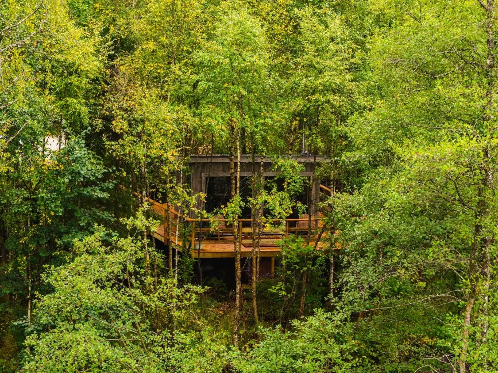
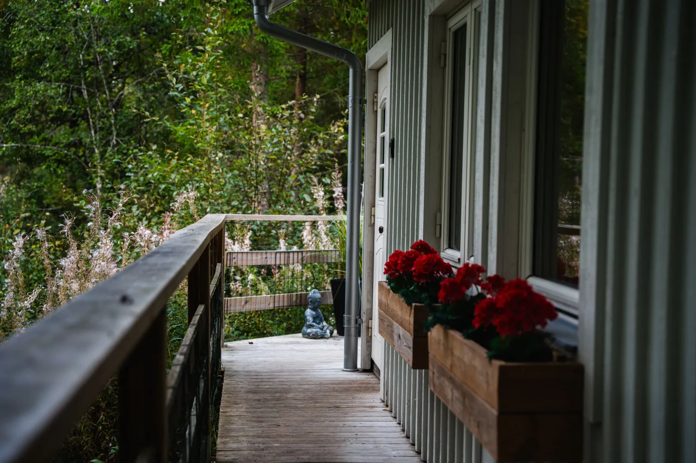
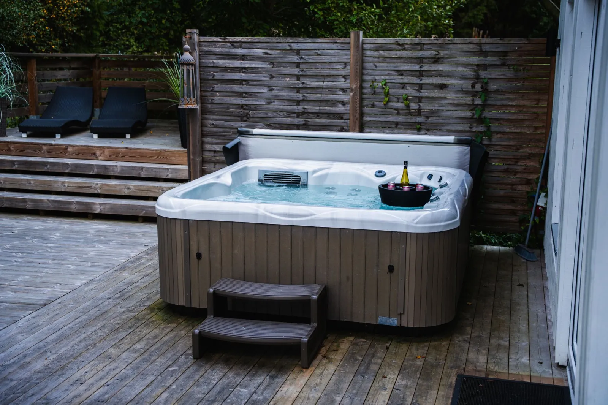
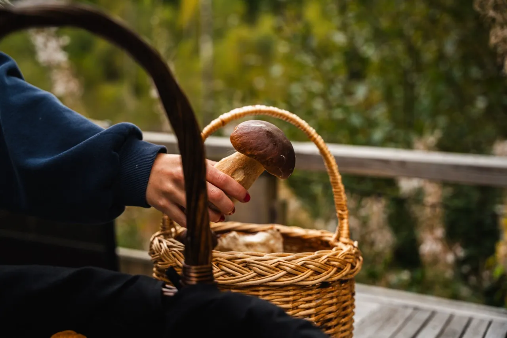

Doften av brinnande björkved och plats för upp till fyra personer. Du tänder kaminen själv – ved ingår.
Ved ingår – svalka dig i den kalla duschen efteråt
Välkommen till Pinebo Palace – ett ombonat gästhus vid en porlande bäck i skogen utanför Ulricehamn. Hundvänligt, med vedeldad bastu och spabad. Boka direkt hos oss, utan mellanhänder.
Pinebo Palace är ett ombonat gästhus på vår gård i skogen utanför Ulricehamn, precis vid en porlande bäck. Här vaknar du till fågelsång och bäckens sus, dricker morgonkaffet på altanen och låter dagarna ta den tid de behöver.
Gästhuset ligger avskilt med egen ingång och en altan som vetter bort från vårt bostadshus – så att du kan njuta i lugn och ro. Du hittar oss även på Airbnb, men här bokar du direkt hos oss: utan plattformsavgifter och med personlig kontakt hela vägen.

Genomtänkt inredning, sovloft under takåsarna och luftvärmepump som ger behaglig värme året om. Här finns bekvämligheterna – men naturen står i centrum.

Hundar är varmt välkomna till Pinebo Palace. Här finns skog, mossa och bäck direkt utanför dörren – och en inhägnad altan där hunden kan röra sig fritt.
Tyvärr kan vi inte ta emot katter på grund av allergi.

Gör vistelsen extra avkopplande. Den vedeldade bastun och det varma spabadet bokas enkelt som tillval.

Doften av brinnande björkved och plats för upp till fyra personer. Du tänder kaminen själv – ved ingår.

Kliv ner i 38-gradigt vatten efter en dag i skogen. Spabadet står uppvärmt och redo när du anländer.
Grundpriset är 1 300 kr/natt för hela stugan. Inga dolda avgifter – välj bara till det du vill ha.
Bäcken porlar precis utanför, den grönmossiga skogen börjar vid altanen och fina vandringsleder finns inom 20 minuter med bil.

Skogen runt gästhuset bjuder på svamp och bär. Ta med en korg på promenaden – vi tipsar gärna om var du ska leta.

Gästhuset ligger precis vid en bäck. Somna och vakna till ett rofyllt, avkopplande ljudlandskap.

Många fina vandringsleder finns inom 20 minuter med bil. Vi delar gärna våra favoriter – och tipsar om ett utmärkt ställe att ta en fika på.
Välj datum och tillval här på sidan. Du bokar direkt hos oss – utan plattformsavgifter.
Vi välkomnar dig gärna personligen när vi har möjlighet. Annars checkar du smidigt in själv via nyckelskåp. Incheckning från kl. 15:00.
Elda i bastun, sjunk ner i spabadet och låt skogen göra resten. I gästhuset finns husmanual och QR-kod med våra bästa tips. Utcheckning senast kl. 11:00.
Omdömen från gäster som bott hos oss via Airbnb.
★★★★★
Fantastisk vistelse från början till slut! 🌿
Så rofyllt med den porlande bäcken precis intill, och spabadet var verkligen pricken över i:et.
Toppenvärdar med fantastisk gästfrihet och riktigt bra kommunikation.
Rekommenderas starkt! Vi kommer garanterat att återvända till denna underbara idyll. ⭐
★★★★★
Vi njöt fullt ut av vår vistelse hos Andreas och Maria som ett par med hund från första till sista sekunden.
Huset ligger mitt i naturen, precis vid en bäck, och från terrassen har man direkt tillgång till den vackra, grönmossiga skogen. Andreas gav oss alltid bra rekommendationer och tips och svarade alltid blixtsnabbt på våra frågor.
I den här mysiga stugan kan man njuta fullt ut av lugnet och den vackra svenska naturen.
Tack så mycket för den fantastiska vistelsen, vi kommer gärna tillbaka!
★★★★★
Vi tillbringade några nätter här. Stället har allt du behöver. Den lilla ån utanför fönstren ger ett trevligt avkopplande ljudlandskap.
Det finns många bra vandringsleder inom 20 minuter med bil, och bastun och den kalla duschen är fantastiska efter en dags vandring.. :)
★★★★★
Vi har precis tillbringat 8 nätter hos Andreas och Maria på Pinebo Palace Guesthouse, och vi kan ärligt talat säga att det är ett av våra favorit-Airbnb hittills. Boendet är vackert inrett med alla saker du kan behöva under din vistelse. Vi tog med egna sängkläder och handdukar, men om du vill kan du hyra dem av värdarna mot en avgift. Boendet är mycket lätt att hitta och inne i boendet tillhandahöll värdarna massor av användbara tips via QR-kod och husmanual. Andreas och Maria är båda mycket vänliga, svarade snabbt och effektivt på alla frågor vi hade och upprätthöll också en god kommunikation med oss medan vi var i boendet. De rekommenderade också några underbara ställen att besöka i närheten, uppmuntrade oss att plocka svamp i skogen och rekommenderade ett utmärkt ställe att ta en fika på. Detta boende är ett måste om du vill komma bort från vardagslivets liv och rörelse. Vi hoppas kunna komma tillbaka under vårt nästa svenska äventyr.
★★★★★
Vi hade en mycket fin vistelse hos Maria och Andreas! Han gav många bra tips och var mycket hjälpsam. 5/5!
★★★★★
Underbart ställe!
Incheckning sker från kl. 15:00 och utcheckning senast kl. 11:00. Vi välkomnar dig gärna personligen när vi har möjlighet – annars checkar du smidigt in själv via nyckelskåp.
Ja, hundar är varmt välkomna! Altanen runt gästhuset är inhägnad, så du kan ha din hund lös där. På gården ska hunden vara kopplad, och vi plockar upp efter hundarna. Tyvärr kan vi inte ta emot katter på grund av allergi.
Ja, vi bor i ett eget hus på samma gård. Gästhuset ligger avskilt med egen ingång och en altan som vetter bort från vårt bostadshus, så du kan njuta av vistelsen i lugn och ro. På gården bor även våra hundar Bentley och Vera.
Du kan ta med egna, eller hyra sängkläder, handdukar och badlakan av oss för 250 kr. Lägg till det när du väljer tillval i bokningen.
Ja, det finns många fina vandringsleder inom 20 minuter med bil. Skogen börjar dessutom direkt vid altanen. I gästhuset finns en husmanual och QR-kod med våra bästa tips om området.
Ja, i Ulricehamn finns flera matbutiker en kort bilresa från stugan.
Du kan avboka kostnadsfritt fram till 14 dagar före ankomst.
Antingen följer du vår enkla städchecklista, eller så lägger du till slutstädning för 800 kr så sköter vi det.
Säkra dina datum, lägg till bastu och bad och njut av ett avskilt, hundvänligt gästhus mitt i skogen. Fri avbokning upp till 14 dagar före ankomst.